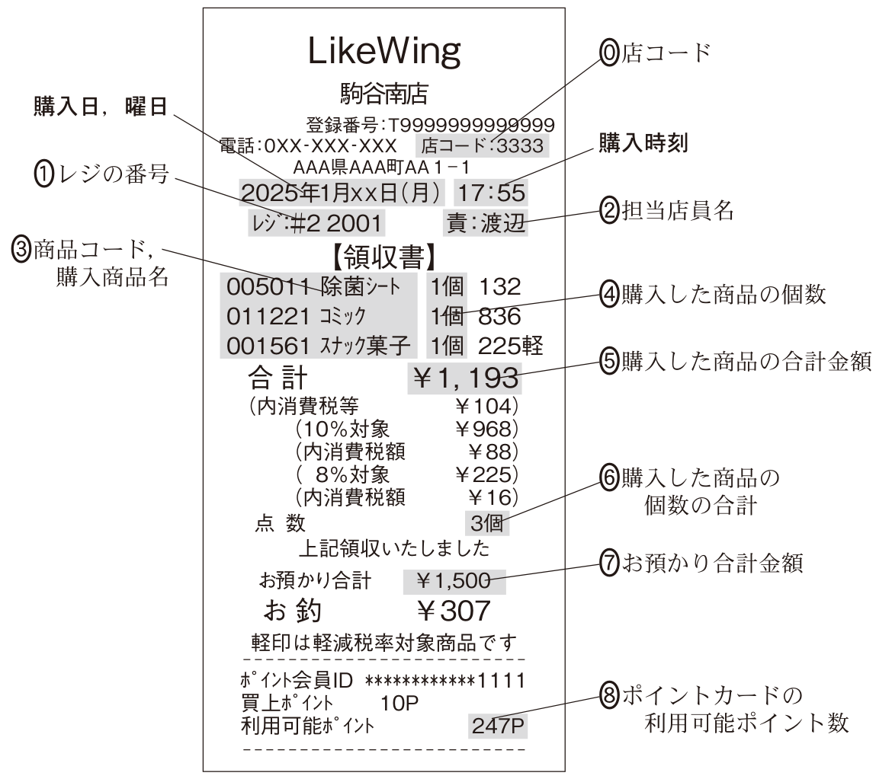
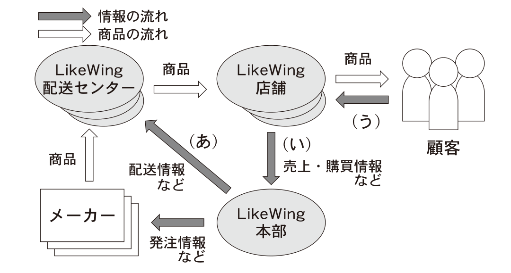

第2問 次の問い（A・B）に答えよ。（配点30）
A 高校生のYさんは，職業体験のため全国チェーンの総合スーパーマーケット「LikeWing」駒谷南店を訪れている。レジを担当したYさんと店長の会話文を読み，後の問い（問1～4）に答えよ。
Yさん：レシートにはたくさんの情報が印字されていますね（図1）。このレシートには「ポイント会員ID」が載っていますが，ポイントカードは店側にとってどんなよいことがあるのですか？
店長：LikeWing では，ポイントカードを作成する際に，お客様の名前，性別，生年の三つの属性情報をポイント会員情報として登録してもらっています。そして，(A)ポイント会員情報とレシートに印字されている情報を組み合わせて分析することで販売促進につなげています。
Yさん：それらの情報には大切な情報も多いですよね。どう管理されているのですか？
店長：はい。ポイント会員情報とレシートに印字されている情報は，LikeWing の本部の情報システムで一括して管理しています。(B)本部，各店舗，商品を製造するメーカー，商品を店舗に配送する配送センターの間で情報をやり取りしていて，商品は本部が一括して発注し，配送の指示を出します。
Yさん：LikeWing のネットショッピングサイトは有名ですね。そのネットショッピングサイトと，この情報システムはつながっているのですか？
店長：今まさに，連携を検討しているところです。これらが(C)連携するメリットは多くあります。

問1 次の文章を読み，空欄 ア ～ ウ に入れるのに最も適当なものを，図1の⓪～⑧のうちから一つずつ選べ。ただし，空欄 イ ・ ウ の解答の順序は問わない。
LikeWing 全体での「時間帯ごとの総売上額（消費税込）」の比較を行うには，図1の「購入時刻」と「 ア 」に表されている情報から分析する。また，「曜日別の各商品の購買の状況」を把握するには，図1の「購入日，曜日」と「 イ 」と「 ウ 」に表されている情報から分析する。
問2 下線部(A)の分析によって得られない情報として最も適当なものを，次の⓪～③のうちから一つ選べ。 エ
問3 図2は，下線部(B)に示すLikeWing の情報システムにおける主な情報の流れと商品の流れを表している。なお，顧客は必ずポイントカードを提示して商品を購入するものとする。

図2の中で，次のⅠ・Ⅱの情報のそれぞれが必要とされる情報の流れ（図2のあ～う）を過不足なく含むものを，後の⓪～⑥のうちから一つずつ選べ。
Ⅰ 店コード オ
Ⅱ ポイント会員ID カ
問4 下線部(C)の連携するメリットとして，次のⅠ～Ⅲが考えられる。これらを実現するために，後の【条件】あ～うのうち，LikeWing の情報システムに求められる条件はどれか。空欄 キ ～ ケ のそれぞれについて，【条件】あ～うを過不足なく含むものを，後の解答群のうちから一つずつ選べ。なお，LikeWing のポイント会員であるか否かにかかわらず，ネットショッピングを利用する顧客は，ネットショッピングのアカウントを作成して，宅配のための自宅の住所を登録するものとする。
| 連携するメリット | 条件 | |
|---|---|---|
| Ⅰ | 顧客がネットショッピングサイトにログインしたときに，現在のポイントカードのポイント数と自宅に近い実店舗の広告チラシが自動的に表示される。 | キ |
| Ⅱ | 顧客がネットショッピングで商品を購入しようとするとき，その顧客がポイントカードをよく利用する実店舗のうちで，その商品の在庫がある実店舗の情報が表示される。 | ク |
| Ⅲ | 顧客がネットショッピングサイトにログインしたときに，商品の購入傾向が実店舗も含めて類似している他の顧客の購入履歴をもとに，おすすめ商品を画面に表示する。 | ケ |